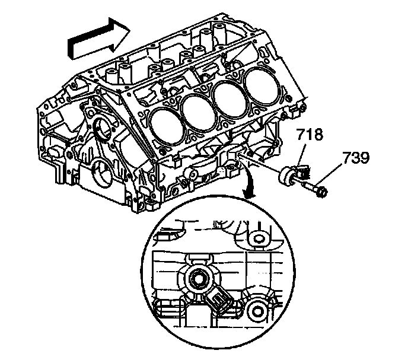

31. Engine Block Plug Removal
Engine Block Plug Removal

1. Remove the engine block coolant heater (114) and seal (115).

2. Remove the engine block right rear coolant drain hole plug and seal.

3. Remove the engine block left front oil gallery plug (116) and seal (117).

4. Remove the engine block left rear oil gallery plug (112) and seal (113).
If the block plug and coolant heater sealing washers are not damaged, they may be used during assembly.
5. Remove the engine block rear oil gallery plug (111) and seal.
6. Inspect the O-ring seal of the rear oil gallery plug.
If the O-ring seal is not cut or damaged, the plug and O-ring seal may be used during assembly.

Important: Remove the front oil gallery plug, only if service is required. If the front oil gallery plug is removed, a NEW oil gallery plug must be installed.
7. Remove the engine block front oil gallery plug (101).

8. Remove the left side knock sensor (718) and bolt (739).

9. Remove the right side knock sensor (718) and bolt (739).